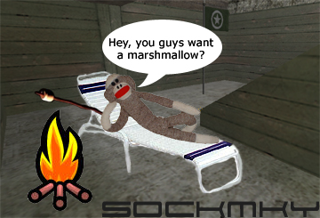

|
| All images and code (c) Copyright Bill Kammermeier. You may also contact me on AOL IM. Enjoy your stay! | |
 Old Sp3c Info Match History Server Info Resources 1.3 Config Scripts 1.3 Quotes  Full Roster TPG 6v6 TPG 3v3  Map Downloads Ventrilo Tips DOD Leagues Past Champs Community Sites |
S0cKMnkYAfter months of ridicule by BuLLeT, MethoD, and HeaT, S0cKMnKY was officially asked to join Sp3c|aLisT after displaying some amazing BAR skills on dod_anzio. S0ckMnKY's specialities are camping, pitching tents, laying on a lounge chair, proning in dark corners, camping, and camping. He is also quite good at helping cap double flags if he doesn't die on his way from the campsite. S0cKMnKY helps put the fun back into DOD by doing all sorts of crazy shit you would never expect.
Noteable Stories:  |


|
|